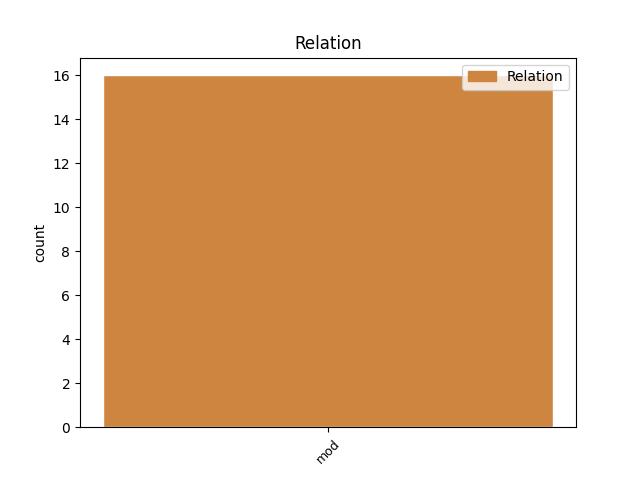
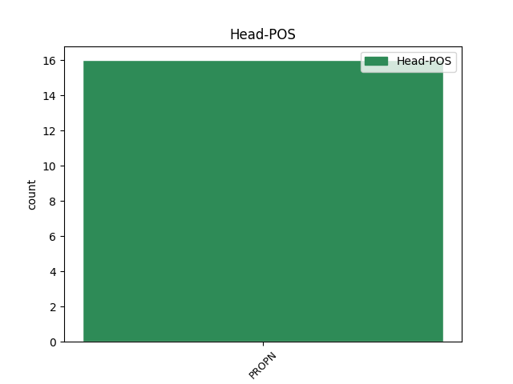
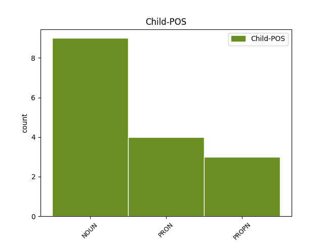

Distribution of features within this leaf



Agreement Rules sorted by frequency.
- When the dependent token is the modifer(mod) of the head token, and the head token is PROPN and the dependent token is PRON.
1 Láimhseáltar _ _ _ _ 0 _ _ _
2 an _ _ _ _ 0 _ _ _
3 ghné _ _ _ _ 0 _ _ _
4 seo _ _ _ _ 0 _ _ _
5 den _ _ _ _ 0 _ _ _
6 scéal _ _ _ _ 0 _ _ _
7 idir _ _ _ _ 0 _ _ _
8 an _ _ _ _ 0 _ _ _
9 bheirt _ _ _ _ 0 _ _ _
10 acu _ _ _ _ 0 _ _ _
11 le _ _ _ _ 0 _ _ _
12 teannas _ _ _ _ 0 _ _ _
13 tuisceanach _ _ _ _ 0 _ _ _
14 áirithe _ _ _ _ 0 _ _ _
15 ionas _ _ _ _ 0 _ _ _
16 gur _ _ _ _ 0 _ _ _
17 tuigthe _ _ _ _ 0 _ _ _
18 go _ _ _ _ 0 _ _ _
19 maith _ _ _ _ 0 _ _ _
20 dúinn _ _ _ _ 0 _ _ _
21 nach _ _ _ _ 0 _ _ _
22 aon _ _ _ _ 0 _ _ _
23 bhábóg _ _ _ _ 0 _ _ _
24 cheannéadrom _ _ _ _ 0 _ _ _
25 ná _ _ _ _ 0 _ _ _
26 ráistéir _ _ _ _ 0 _ _ _
27 ainnire _ _ _ _ 0 _ _ _
28 gan _ _ _ _ 0 _ _ _
29 fios _ _ _ _ 0 _ _ _
30 a _ _ _ _ 0 _ _ _
31 haigne _ _ _ _ 0 _ _ _
32 í _ _ _ _ 0 _ _ _
33 Eibhlín _ _ _ _ 0 _ _ _
34 agus _ _ _ _ 0 _ _ _
35 nach _ _ _ _ 0 _ _ _
36 aon _ _ _ _ 0 _ _ _
37 ridire _ _ _ _ 0 _ _ _
38 ar _ _ _ _ 0 _ _ _
39 a _ _ _ _ 0 _ _ _
40 chapall _ _ _ _ 0 _ _ _
41 bán _ _ _ _ 0 _ _ _
42 é é PRON Pers Gender=Masc|Number=Sing|Person=3 43 mod _ _
43 Murt Murt PROPN Noun Case=NomAcc|Gender=Masc|Number=Sing 0 _ _ _
44 . _ _ _ _ 0 _ _ _
1 Bhí _ _ _ _ 0 _ _ _
2 Siobhán Siobhán PROPN Noun Case=NomAcc|Gender=Fem|Number=Sing 0 _ _ _
3 Kelly _ _ _ _ 0 _ _ _
4 , _ _ _ _ 0 _ _ _
5 36 _ _ _ _ 0 _ _ _
6 bliain bliain NOUN Noun Case=NomAcc|Gender=Fem|Number=Sing 2 mod _ _
7 d' _ _ _ _ 0 _ _ _
8 aois _ _ _ _ 0 _ _ _
9 sa _ _ _ _ 0 _ _ _
10 dara _ _ _ _ 0 _ _ _
11 háit _ _ _ _ 0 _ _ _
12 sna _ _ _ _ 0 _ _ _
13 comórtais _ _ _ _ 0 _ _ _
14 liathróide _ _ _ _ 0 _ _ _
15 agus _ _ _ _ 0 _ _ _
16 ribín _ _ _ _ 0 _ _ _
17 a _ _ _ _ 0 _ _ _
18 bhuaigh _ _ _ _ 0 _ _ _
19 Gormley _ _ _ _ 0 _ _ _
20 . _ _ _ _ 0 _ _ _
1 Phós _ _ _ _ 0 _ _ _
2 Siobhán _ _ _ _ 0 _ _ _
3 Ní _ _ _ _ 0 _ _ _
4 Bhrádaigh _ _ _ _ 0 _ _ _
5 agus _ _ _ _ 0 _ _ _
6 Setanta _ _ _ _ 0 _ _ _
7 Ó _ _ _ _ 0 _ _ _
8 Dochartaigh _ _ _ _ 0 _ _ _
9 ar _ _ _ _ 0 _ _ _
10 an _ _ _ _ 0 _ _ _
11 10ú _ _ _ _ 0 _ _ _
12 lá _ _ _ _ 0 _ _ _
13 de _ _ _ _ 0 _ _ _
14 mhí _ _ _ _ 0 _ _ _
15 na _ _ _ _ 0 _ _ _
16 Nollag _ _ _ _ 0 _ _ _
17 seo _ _ _ _ 0 _ _ _
18 imithe _ _ _ _ 0 _ _ _
19 tharainn _ _ _ _ 0 _ _ _
20 thall _ _ _ _ 0 _ _ _
21 i _ _ _ _ 0 _ _ _
22 Santa _ _ _ _ 0 _ _ _
23 Lucia Lucia PROPN Noun Case=NomAcc|Gender=Masc|Number=Sing 0 _ _ _
24 sa _ _ _ _ 0 _ _ _
25 Mhuir Muir PROPN Noun Case=Gen|Form=Len|Gender=Masc|Number=Sing 23 mod _ _
26 Chairib _ _ _ _ 0 _ _ _
27 . _ _ _ _ 0 _ _ _
Disagree Examples:
1 ' _ _ _ _ 0 _ _ _
2 Creidimidne _ _ _ _ 0 _ _ _
3 , _ _ _ _ 0 _ _ _
4 mar _ _ _ _ 0 _ _ _
5 thoradh _ _ _ _ 0 _ _ _
6 ar _ _ _ _ 0 _ _ _
7 INTRA _ _ _ _ 0 _ _ _
8 , _ _ _ _ 0 _ _ _
9 go _ _ _ _ 0 _ _ _
10 bhforbraíonn _ _ _ _ 0 _ _ _
11 na _ _ _ _ 0 _ _ _
12 mic _ _ _ _ 0 _ _ _
13 léinn _ _ _ _ 0 _ _ _
14 a _ _ _ _ 0 _ _ _
15 gcuid _ _ _ _ 0 _ _ _
16 tuisceana _ _ _ _ 0 _ _ _
17 ar _ _ _ _ 0 _ _ _
18 shaol _ _ _ _ 0 _ _ _
19 proifisiúnta _ _ _ _ 0 _ _ _
20 na _ _ _ _ 0 _ _ _
21 tionsclaíochta _ _ _ _ 0 _ _ _
22 agus _ _ _ _ 0 _ _ _
23 go _ _ _ _ 0 _ _ _
24 dtagann _ _ _ _ 0 _ _ _
25 borradh _ _ _ _ 0 _ _ _
26 faoina _ _ _ _ 0 _ _ _
27 bhféinmhuinín _ _ _ _ 0 _ _ _
28 , _ _ _ _ 0 _ _ _
29 a _ _ _ _ 0 _ _ _
30 n-aibíocht _ _ _ _ 0 _ _ _
31 agus _ _ _ _ 0 _ _ _
32 a _ _ _ _ 0 _ _ _
33 gcuid _ _ _ _ 0 _ _ _
34 scileanna _ _ _ _ 0 _ _ _
35 caidrimh _ _ _ _ 0 _ _ _
36 dhaonna _ _ _ _ 0 _ _ _
37 , _ _ _ _ 0 _ _ _
38 ' _ _ _ _ 0 _ _ _
39 a _ _ _ _ 0 _ _ _
40 deir _ _ _ _ 0 _ _ _
41 an _ _ _ _ 0 _ _ _
42 Dr. _ _ _ _ 0 _ _ _
43 Caoilfhionn Caoilfhionn PROPN Noun Case=NomAcc|Gender=Fem|Number=Sing 0 _ _ _
44 Nic _ _ _ _ 0 _ _ _
45 Pháidín _ _ _ _ 0 _ _ _
46 , _ _ _ _ 0 _ _ _
47 Stiúrthóir stiúrthóir NOUN Noun Case=NomAcc|Gender=Masc|Number=Sing 43 mod _ _
48 Fiontar _ _ _ _ 0 _ _ _
49 . _ _ _ _ 0 _ _ _
1 Cnoc Cnoc PROPN Noun Case=NomAcc|Gender=Masc|Number=Sing 0 _ _ _
2 Fola fuil NOUN Noun Case=Gen|Gender=Fem|Number=Sing 1 mod _ _
3 Anseo _ _ _ _ 0 _ _ _
4 tá _ _ _ _ 0 _ _ _
5 clagarnach _ _ _ _ 0 _ _ _
6 claíomh _ _ _ _ 0 _ _ _
7 le _ _ _ _ 0 _ _ _
8 cluinstean _ _ _ _ 0 _ _ _
9 I _ _ _ _ 0 _ _ _
10 ngaoth _ _ _ _ 0 _ _ _
11 pholltach _ _ _ _ 0 _ _ _
12 na _ _ _ _ 0 _ _ _
13 Rinne _ _ _ _ 0 _ _ _
14 ag _ _ _ _ 0 _ _ _
15 tógáil _ _ _ _ 0 _ _ _
16 bruíne _ _ _ _ 0 _ _ _
17 . _ _ _ _ 0 _ _ _
1 Ní _ _ _ _ 0 _ _ _
2 raibh _ _ _ _ 0 _ _ _
3 aon _ _ _ _ 0 _ _ _
4 Teresa _ _ _ _ 0 _ _ _
5 ina _ _ _ _ 0 _ _ _
6 measc _ _ _ _ 0 _ _ _
7 ach _ _ _ _ 0 _ _ _
8 chomh _ _ _ _ 0 _ _ _
9 beag _ _ _ _ 0 _ _ _
10 , _ _ _ _ 0 _ _ _
11 ná _ _ _ _ 0 _ _ _
12 Celia _ _ _ _ 0 _ _ _
13 , _ _ _ _ 0 _ _ _
14 ná _ _ _ _ 0 _ _ _
15 Jane _ _ _ _ 0 _ _ _
16 , _ _ _ _ 0 _ _ _
17 ná _ _ _ _ 0 _ _ _
18 Julia _ _ _ _ 0 _ _ _
19 , _ _ _ _ 0 _ _ _
20 ná _ _ _ _ 0 _ _ _
21 Alice Alice PROPN Noun Case=NomAcc|Gender=Fem|Number=Sing 0 _ _ _
22 - _ _ _ _ 0 _ _ _
23 ainmneacha ainm NOUN Noun Case=NomAcc|Gender=Masc|Number=Plur 21 mod _ _
24 a _ _ _ _ 0 _ _ _
25 bhí _ _ _ _ 0 _ _ _
26 fairsing _ _ _ _ 0 _ _ _
27 go _ _ _ _ 0 _ _ _
28 maith _ _ _ _ 0 _ _ _
29 san _ _ _ _ 0 _ _ _
30 ardchathair _ _ _ _ 0 _ _ _
31 céad _ _ _ _ 0 _ _ _
32 bliain _ _ _ _ 0 _ _ _
33 ó _ _ _ _ 0 _ _ _
34 shin _ _ _ _ 0 _ _ _
35 . _ _ _ _ 0 _ _ _
1 ' _ _ _ _ 0 _ _ _
2 Dhera Dhera PROPN Noun Case=NomAcc|Gender=Masc|Number=Sing 0 _ _ _
3 , _ _ _ _ 0 _ _ _
4 mo _ _ _ _ 0 _ _ _
5 thrua trua NOUN Noun Case=NomAcc|Form=Len|Gender=Fem|Number=Sing 2 mod _ _
6 mhór _ _ _ _ 0 _ _ _
7 sibh _ _ _ _ 0 _ _ _
8 , _ _ _ _ 0 _ _ _
9 ' _ _ _ _ 0 _ _ _
10 arsa _ _ _ _ 0 _ _ _
11 an _ _ _ _ 0 _ _ _
12 Mórach _ _ _ _ 0 _ _ _
13 , _ _ _ _ 0 _ _ _
14 ' _ _ _ _ 0 _ _ _
15 ná _ _ _ _ 0 _ _ _
16 raibh _ _ _ _ 0 _ _ _
17 naonúr _ _ _ _ 0 _ _ _
18 acu _ _ _ _ 0 _ _ _
19 ag _ _ _ _ 0 _ _ _
20 mo _ _ _ _ 0 _ _ _
21 mháthairse _ _ _ _ 0 _ _ _
22 , _ _ _ _ 0 _ _ _
23 agus _ _ _ _ 0 _ _ _
24 ná _ _ _ _ 0 _ _ _
25 fuair _ _ _ _ 0 _ _ _
26 sí _ _ _ _ 0 _ _ _
27 ainm _ _ _ _ 0 _ _ _
28 dos _ _ _ _ 0 _ _ _
29 gach _ _ _ _ 0 _ _ _
30 aoinne _ _ _ _ 0 _ _ _
31 acu _ _ _ _ 0 _ _ _
32 ! _ _ _ _ 0 _ _ _
1 Tá _ _ _ _ 0 _ _ _
2 cáil _ _ _ _ 0 _ _ _
3 ar _ _ _ _ 0 _ _ _
4 an _ _ _ _ 0 _ _ _
5 leabhar _ _ _ _ 0 _ _ _
6 leis _ _ _ _ 0 _ _ _
7 an _ _ _ _ 0 _ _ _
8 Phoncánach _ _ _ _ 0 _ _ _
9 , _ _ _ _ 0 _ _ _
10 Jahn _ _ _ _ 0 _ _ _
11 Sacks _ _ _ _ 0 _ _ _
12 , _ _ _ _ 0 _ _ _
13 ar _ _ _ _ 0 _ _ _
14 The _ _ _ _ 0 _ _ _
15 Donegal _ _ _ _ 0 _ _ _
16 Mafia _ _ _ _ 0 _ _ _
17 i _ _ _ _ 0 _ _ _
18 bParlaimint _ _ _ _ 0 _ _ _
19 na _ _ _ _ 0 _ _ _
20 hEorpa _ _ _ _ 0 _ _ _
21 , _ _ _ _ 0 _ _ _
22 go _ _ _ _ 0 _ _ _
23 dtí _ _ _ _ 0 _ _ _
24 an _ _ _ _ 0 _ _ _
25 lá _ _ _ _ 0 _ _ _
26 atá _ _ _ _ 0 _ _ _
27 inniu _ _ _ _ 0 _ _ _
28 ann _ _ _ _ 0 _ _ _
29 , _ _ _ _ 0 _ _ _
30 go _ _ _ _ 0 _ _ _
31 háirithe _ _ _ _ 0 _ _ _
32 i _ _ _ _ 0 _ _ _
33 measc _ _ _ _ 0 _ _ _
34 lucht _ _ _ _ 0 _ _ _
35 mion-náisiún _ _ _ _ 0 _ _ _
36 , _ _ _ _ 0 _ _ _
37 lucht _ _ _ _ 0 _ _ _
38 mionteangacha _ _ _ _ 0 _ _ _
39 agus _ _ _ _ 0 _ _ _
40 cultúir _ _ _ _ 0 _ _ _
41 ó _ _ _ _ 0 _ _ _
42 Winnie _ _ _ _ 0 _ _ _
43 Ewing Ewing PROPN Noun Case=Gen|Form=Len|Gender=Masc|Number=Sing 0 _ _ _
44 na _ _ _ _ 0 _ _ _
45 hAlban halban NOUN Noun Case=Gen|Gender=Fem|Number=Sing 43 mod _ _
46 go _ _ _ _ 0 _ _ _
47 dtí _ _ _ _ 0 _ _ _
48 an _ _ _ _ 0 _ _ _
49 Ministir _ _ _ _ 0 _ _ _
50 Protastúnach _ _ _ _ 0 _ _ _
51 / _ _ _ _ 0 _ _ _
52 Liútarach _ _ _ _ 0 _ _ _
53 de _ _ _ _ 0 _ _ _
54 chuid _ _ _ _ 0 _ _ _
55 na _ _ _ _ 0 _ _ _
56 Danmhairge _ _ _ _ 0 _ _ _
57 , _ _ _ _ 0 _ _ _
58 bean _ _ _ _ 0 _ _ _
59 a _ _ _ _ 0 _ _ _
60 bhí _ _ _ _ 0 _ _ _
61 mar _ _ _ _ 0 _ _ _
62 Leas-Uachtarán _ _ _ _ 0 _ _ _
63 ar _ _ _ _ 0 _ _ _
64 Ghrúpa _ _ _ _ 0 _ _ _
65 nach _ _ _ _ 0 _ _ _
66 raibh _ _ _ _ 0 _ _ _
67 de _ _ _ _ 0 _ _ _
68 theideal _ _ _ _ 0 _ _ _
69 acu _ _ _ _ 0 _ _ _
70 ach _ _ _ _ 0 _ _ _
71 an _ _ _ _ 0 _ _ _
72 ' _ _ _ _ 0 _ _ _
73 Technical _ _ _ _ 0 _ _ _
74 Coordination _ _ _ _ 0 _ _ _
75 Group _ _ _ _ 0 _ _ _
76 ' _ _ _ _ 0 _ _ _
77 . _ _ _ _ 0 _ _ _